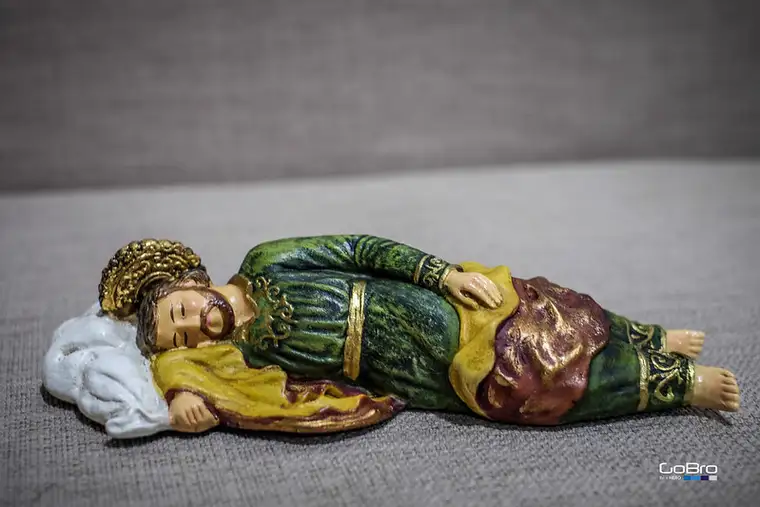

There’s something sacred about a soundly sleeping human being.
When our children were little, after a chaotic day, seeing them sleeping soundly at last, I found that their resting put my own weary heart at instant ease.
It’s the same feeling I get when looking at a rendering of “Sleeping St. Joseph,” a visual often depicted in small statues of Jesus’ foster father in a reclining position, deep in sleep. Immediately, I sense the invitation to draw closer.

I delighted in learning Pope Francis had declared 2021 the Year of St. Joseph. After years of St. Joseph’s influence seeming mostly dormant, we are discovering his life’s quiet depth, and its transforming power.
My husband and I became interested in St. Joseph in March 2019, as we prepared for his second open-heart surgery. In the month we honor St. Joseph, we turned to him in our distress.
A year later, when the pandemic hit, it seemed the right time to go deeper with this great saint. A talk to be given by Fr. Don Calloway near my husband’s hometown in Minnesota was, like every public event, canceled. Journeying together with his book, “Consecration to St. Joseph: The Wonders of Our Spiritual Father,” seemed a way to reclaim a dashed opportunity.
The book remains a bestseller, and I can attest to its richness. Our walk with St. Joseph, with Fr. Calloway’s guidance, blessed us greatly during a time of consternation and confusion.
But it seems we can never mine our precious saints and the lessons they offer enough. And recently, I’ve been awakened to “Sleeping St. Joe,” Pope Francis’ devotion of writing down prayer requests and slipping them under the statue he keeps near of St. Joseph in repose.
Why does this practice, along with the visual of the resting saint, so quickly appeal? A few reasons seem to stand out.
The vulnerability of St. Joseph sleeping disarms our hesitation to approach. His peaceful stance draws us closer. We also know that in order to be restful, we must be trusting. When we are filled with anxiety and lack trust that we are truly in God’s care, sleep can be elusive. But in merely gazing on St. Joseph resting, we can be assured that we, too, can trust, and leave our cares to God.
Additionally, though we as humans need rest to replenish, God never sleeps. Even as we sleep, God works quietly, deftly, in our souls. We might not be given divine, prophetic instructions, like St. Joseph, in our dreams, but we can be assured that as we rest, God is bringing restoration within.
Given this, why not give Sleeping St. Joe a chance this Lent?
St. Joseph, pray for us.